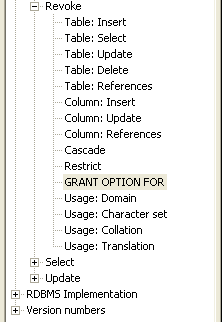

Use this command to revoke object privileges for a particular object from users and roles. To revoke system privileges or roles, use the REVOKE (System privileges)
|
Syntax of the SQL statement |
|
REVOKE { object-privilege [,...] | ALL [PRIVILEGES]} ON base-table-name FROM user-name [,...] [ CASCADE | RESTRICT ] ; |
|
object-privilege ::=
table-privilege | column-privilege |
|
table-privilege ::=
INSERT | SELECT | UPDATE | DELETE | REFERENCES [( column [, ... ])] |
|
column-privilege ::=
INSERT | UPDATE | REFERENCES [( column [, ... ])] |
|
user-name ::=
letter { letter | digit | '_' [, ...] } |
To see which parts and options of the revoke statement are supported on your database, look it up in the ODBC Info tree under 'SQL Supported standard / Revoke'.

See also: GRANT (Object Privileges) , REVOKE (System Privileges and Roles)